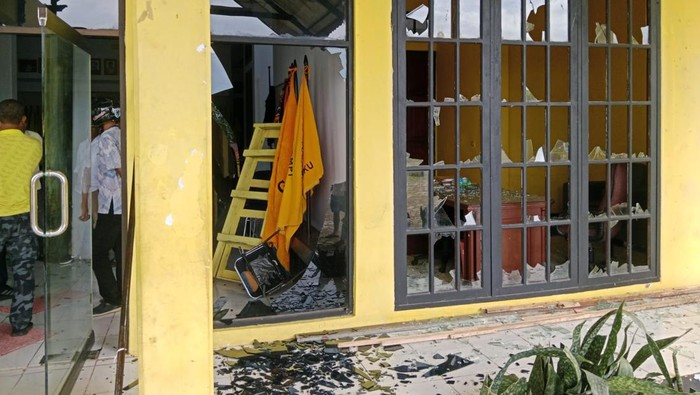
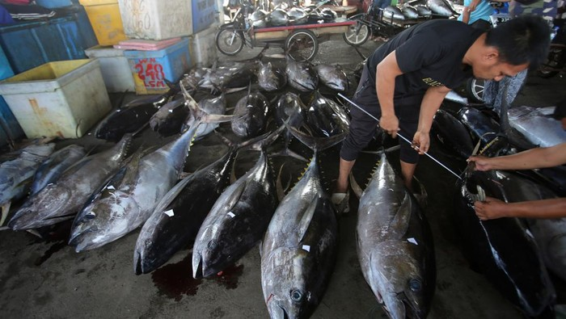

News

Kantor DPD Golkar Maluku Diserang saat Pengurus Rapat, Pintu-Jendela Rusak
Kantor DPD Partai Golkar Maluku di Jalan Sultan Hairun, Kota Ambon, diserang orang tak dikenal (OTK) saat pengurus partai menggelar rapat. Akibatnya, pintu dan jendela kantor rusak.
Posted on 19 June 2024
Melihat Ketahanan Otoritarianisme Demokratis
Demokrasi di Indonesia menghadapi tantangan serius dengan munculnya otoritarianisme demokratis. Fenomena ini menunjukkan bagaimana kekuasaan eksekutif semakin menguat, sementara lembaga legislatif dan yudikatif melemah.
Posted on 19 June 2024

Ekonomi Politik Seafood
Indonesia memiliki potensi besar dalam industri perikanan, terutama dalam ekspor seafood. Namun, tantangan seperti regulasi yang ketat dan persaingan global mempengaruhi pertumbuhan sektor ini.
Posted on 19 June 2024